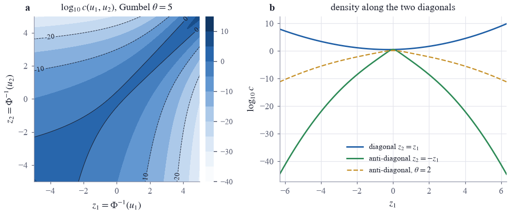
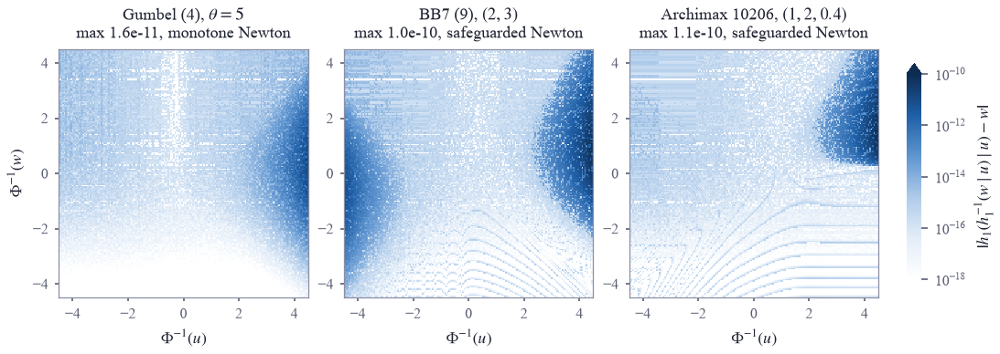
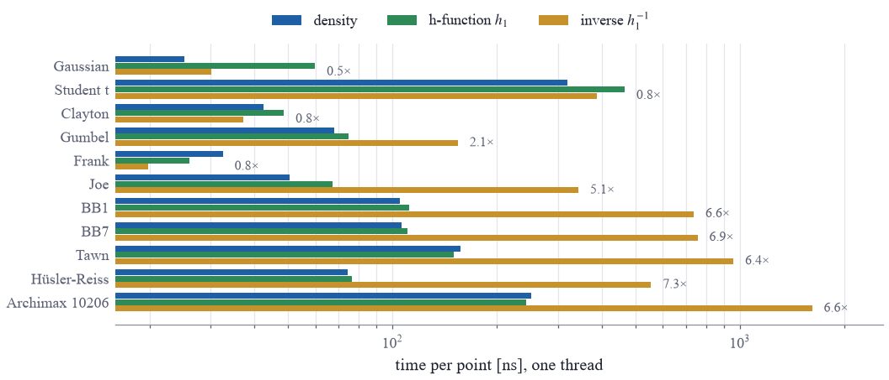

Numerics and stability¶
Copula densities are products and quotients of quantities that span hundreds of orders of
magnitude. A strongly dependent Gumbel or BB7 copula, for example, has a density of order
\(10^{6}\) on the diagonal near a corner and of order \(10^{-30}\) a short distance away, and the
formulas that produce those numbers subtract nearly equal terms. Done naively in double
precision, such computations lose digits (cancellation), overflow, or underflow to zero, and
a likelihood maximiser that meets a NaN or a spurious zero goes astray. This page describes
what fortvine does to stay accurate across the whole parameter box of every family, as
implemented in src/fortvine.f90, src/families_*.inc and src/fortvine_ad.f90.
Inputs: clamping to the open unit square¶
Every routine first clamps its copula data,
(clampu, constant EPSU). Many densities are infinite or undefined at the boundary of
\([0, 1]^2\) (Clayton at the origin, Gumbel along the axes, every family at a point where
\(\log u\) or \(\Phi^{-1}(u)\) diverges), and data sometimes contain exact 0s or 1s.
Clamping makes every evaluation finite while changing nothing for data that are honestly
inside the square: pseudo-observations \(R/(n+1)\) are at least \(1/(n+1)\) away from the
boundary. One consequence is visible in the tests: an h-function cannot be inverted more
precisely than this clamp, so hinv round-trips are checked to \(2 \times 10^{-10}\).
Outputs are guarded on the other side: densities are returned as \(\max(e^{\log c}, \text{tiny})\), so a density is never exactly 0 and its logarithm is always finite; h-functions and inverse h-functions are clipped to \([0, 1]\). Inside the likelihood, a non-finite log-density term is replaced by \(\log(\text{tiny}) \approx -708.4\) with a zero score, so that an invalid region of the parameter space can never look attractive to the optimiser.
Working in log space¶
Every family returns \(\log c\), never \(c\), and every product is a sum of logarithms:
- Pair copulas. The kernels produce \(\log c(u_1, u_2)\) directly from logarithms of the
generator, its derivatives and the Pickands function;
pdfexponentiates only at the very end. - Vines. The vine density is the product of \(d(d-1)/2\) pair densities. fortvine accumulates \(\sum \log c_e\) along the trees and exponentiates once per observation. A ten-dimensional density can be \(10^{\pm 100}\) without any intermediate overflow.
- Prediction grids.
pdf_gridevaluates the vine at many values of one target variable per sample. Edges that do not depend on the target are evaluated once per sample, the others once per grid point; the two parts are kept as separate log sums and combined bin by bin, \(c_k = \exp(\ell_{\text{common}} + \ell_k)\). Every grid density therefore has the same relative accuracy as a directpdfcall, whatever its magnitude: the test suite checkspdf_grid = pdfto a relative error of \(10^{-12}\). - Likelihoods are sums of log-densities, accumulated in 128 fixed blocks in a fixed order, so the value does not depend on the number of OpenMP threads.

Elementary functions without cancellation¶
Three helpers appear throughout, in real and in dual-number form:
| Function | Purpose | How |
|---|---|---|
| \(\operatorname{log1p}(x) = \log(1 + x)\) | small \(x\) | \(\log(u) \cdot x / (u - 1)\) with \(u = 1 + x\) (exact cancellation of the rounding error in \(u\)); \(x\) itself if \(u = 1\) |
| \(\operatorname{expm1}(x) = e^x - 1\) | small \(\lvert x\rvert\) | \((u - 1) \cdot x / \log u\) with \(u = e^x\) for \(\lvert x \rvert \le 1/2\) |
| \(\operatorname{log1mexp}(x) = \log(1 - e^{x})\), \(x < 0\) | both ends | \(\log(-\operatorname{expm1}(x))\) for \(x > -\log 2\), \(\operatorname{log1p}(-e^x)\) otherwise (Mächler 2012) |
| \(\operatorname{lse}(p, q) = \log(e^p + e^q)\) | sums of exponentials | \(\max(p, q) + \operatorname{log1p}(e^{-\lvert p - q\rvert})\) |
The first two are the classical correction tricks for log1p and expm1 built from log
and exp alone; they are written out because the dual-number versions need them, and so
that the real and dual paths agree exactly. The switch at \(-\log 2\) in log1mexp is the
point where both formulas have the same relative accuracy.
Examples from the hand-coded families¶
- Clayton. \(\log(a^{-\theta} + b^{-\theta} - 1)\) is computed as \(m + \log(e^{t_1 - m} + e^{t_2 - m} - e^{-m})\) with \(t_j = -\theta \log u_j\) and \(m = \max(t_1, t_2)\), so neither power overflows for small \(u\) and large \(\theta\). Its inverse h-function is written as \(\exp\bigl(-\operatorname{log1p}(a^{-\theta}\operatorname{expm1}(-\tfrac{\theta}{\theta+1}\log w))/\theta\bigr)\), avoiding the difference \((w a^{\theta+1})^{-\theta/(\theta+1)} - a^{-\theta}\) of two large, nearly equal numbers.
- Frank. The three factors \(e^{-\theta u_1} - 1\), \(e^{-\theta u_2} - 1\) and
\(e^{-\theta} - 1\) are
expm1values, so the density stays accurate for \(\theta\) near 0 (where all three are tiny) and the denominator never cancels. - Joe, BB6, BB7. The parameter-free transforms \(\log(1 - u)\) are computed once per
observation (with
log1pfor BB6/BB7), and powers \((1 - u)^\theta\) are formed as \(\exp(\theta \log(1 - u))\); the Joe inverse h-function works with \(\operatorname{log1mexp}(\theta \operatorname{log1p}(-u)) = \log(1 - (1 - u)^\theta)\). - Gumbel / Joe inverse h-functions are not solved for \(v\) directly. With \(x = -\log u\),
the condition \(h_1 = w\) becomes \(G(d) = L\) for an increasing, concave function \(G\) of a
transformed unknown \(d\); Newton's method from a lower bound then converges monotonically
and cannot overshoot (
hinv_gumbel,hinv_joe). - Student t. The distribution function uses the continued fraction of the regularised incomplete beta function, with its convergents rescaled whenever they leave \([10^{-150}, 10^{150}]\); quantiles start from Hill's (1970) Algorithm 396 approximation and are polished by Halley's method inside a maintained bracket. The normal quantile is Wichura's (1988) AS 241 with about \(10^{-16}\) relative accuracy.
The generic engine: log-space by construction¶
The generic families (codes 10000 and up, src/families_gen.inc) are all of the form
with \(\Psi\) a Laplace transform and \(\ell\) either \(s + t\) (Archimedean) or \((s + t) A\bigl(t/(s+t)\bigr)\) with a Pickands function \(A\). Writing \(L = \ell(S, T)\) and \(\ell_s, \ell_t, \ell_{st}\) for its partial derivatives,
Since \(\Psi' < 0 \le \Psi''\), \(\ell_s, \ell_t \ge 0\) and \(\ell_{st} \le 0\), both terms of the density numerator are non-negative. The engine never forms them: every generator returns \(\log \Psi\), \(\log(-\Psi')\) and \(\log \Psi''\), every inner function returns \(\log \ell_s\), \(\log \ell_t\) and \(\log(-\ell_{st})\), and the numerator is \(\operatorname{lse}(\log \Psi'' + \log \ell_s + \log \ell_t,\ \log(-\Psi') + \log(-\ell_{st}))\). A sum of two non-negative terms computed this way has no cancellation at all.
Carrying \(\log S\) next to \(S\)¶
The arguments \(S = \Phi(u)\) can be astronomically large. For a gamma-inner composition (the construction behind BB2 and BB3), \(\Phi(u)\) contains \(e^{\delta x}\) with \(x\) itself large near the boundary, and overflows double precision long before \(\log \Phi(u)\) does. The engine therefore passes every argument as the pair \((s, \log s)\) and evaluates formulas from whichever is safe:
- \(\log(1 + s)\) is taken as \(\log s + \operatorname{log1p}(e^{-\log s})\) when \(\log s > 0\)
(
lop), so it is correct even when \(s\) itself isInf; - \(s = \operatorname{expm1}(t)\) comes with \(\log s = t + \operatorname{log1mexp}(-t)\) for
\(t > 30\) (
em1); - the inner Pickands argument \(w = T/(S+T)\) is formed as \(\log w = \log T - \operatorname{lse}(\log S, \log T)\) and \(\log(1 - w) = \log S - \operatorname{lse}(\log S, \log T)\), which stay exact when \(w\) underflows because \(S\) and \(T\) differ by hundreds of orders of magnitude.
Cancellation-free Pickands derivatives¶
The partial derivatives of \(\ell(s, t) = (s + t)A(w)\) are
and \(A - wA'\) tends to 0 under strong dependence, so evaluating it as written subtracts two numbers close to 1. The engine instead uses a closed form per Pickands family in which the cancellation has been carried out analytically:
- Logistic / asymmetric logistic (Tawn 1988), with \(M = [(p_1 (1 - w))^\theta + (p_2 w)^\theta]^{1/\theta}\) and the two shares \(s_p + s_q = 1\) of the bracket: \(\ell_s = (1 - p_1) + M s_p / (1 - w)\), \(\ell_t = (1 - p_2) + M s_q / w\), and \(A'' = (\theta - 1) M s_p s_q \bigl(p_1 p_2 / (p q)\bigr)^2\); every term is positive.
- Negative logistic / asymmetric negative logistic (Galambos 1975; Joe 1990): with \(R = (p/q)^\theta\), \(\ell_s = 1 - p_1 (1 + R)^{-1 - 1/\theta}\), evaluated as \((1 - p_1) - p_1\operatorname{expm1}(\cdot)\) from \(\operatorname{lse}(0, \log R)\).
- Hüsler-Reiss (Hüsler & Reiss 1989): \(\ell_s = \Phi(z_2)\), \(\ell_t = \Phi(z_1)\) with \(z_{1,2} = 1/\lambda \pm \tfrac{\lambda}{2}\log\frac{w}{1-w}\), and \(\log \Phi\) is computed from an asymptotic (Mills ratio) series below \(z = -30\), where \(\Phi\) itself underflows near \(z \approx -38\).
- Tawn's mixed model and its asymmetric version use polynomial forms in \(w\) that are positive term by term.
- Khoudraji-transformed Pickands functions reuse the base family's derivatives: \(\ell_{K,s} = (1 - a) + a\, \ell_{0,s}\) and \(A_K'' = a^2 b^2 A_0''(z) / v^3\).
Asymptotic branches¶
Some Laplace transforms have closed forms that are exact in real arithmetic but useless in floating point at the edges of their domain. The engine switches to series expansions there:
- Sibuya generator \(\Psi(s) = 1 - (1 - e^{-s})^{1/\theta}\): for \(e^{-s} < 10^{-8}\), \(\log \Psi = -s - \log\theta + \operatorname{log1p}\bigl((1 - 1/\theta)\, e^{-s}/2\bigr)\), where the direct form would compute \(\log(1 - 1) = -\infty\). As an inner function of a composition, its second derivative contains a factor \(1 - e^{-s}/\theta - (1 - e^{-s})^{1/\theta}\) whose \(O(e^{-s})\) terms cancel exactly; below \(e^{-s} = 10^{-3}\) that factor is summed as a series with the leading terms removed analytically (relative error below \(10^{-10}\) at the switch), and below \(10^{-8}\) the leading term \((1 - 1/\theta)e^{-s}/2\) is used.
- Logarithmic series generator: with \(z = (1 - e^{-\theta}) e^{-s}\), the quantity \(1 - z\) is formed as \((1 - e^{-s}) + e^{-(\theta + s)}\), free of cancellation as \(z \to 1\); for tiny \(z\), \(\log(-\log(1 - z)) = \log z + \operatorname{log1p}(z/2)\); and as an inner function, \(L - z = \sum_{j \ge 2} z^j / j\) is summed directly when \(z < 10^{-3}\). Near \(s = 0\) the composition \(-\log\bigl(L/\theta\bigr)\) is rewritten as \(-\operatorname{log1p}\bigl(-\operatorname{log1p}(\tau)/\theta\bigr)\) to avoid the difference \(\log\theta - \log L\).
- Inverses \(\Phi\) of the Sibuya and logarithmic-series transforms have matching asymptotic forms (e.g. \(x - \log\theta + (\theta - 1)e^{-x}/2\) for the Sibuya inverse when \(e^{-x} < 10^{-8}\)).
Combinations left out¶
Two kinds of composition are deliberately not offered: a logarithmic-series inner transform
under a positive stable, Sibuya or logarithmic-series outer one (Joe 2014, appendix A.1.2
notes the numerical difficulty; in double precision it could not be made accurate), and a
gamma-inner composition combined with a Pickands inner function, which failed the
consistency tests described in Validation. gen_valid rejects these codes.
Inverse h-functions¶
Wherever no closed form exists, \(h(v) = w\) is solved by Newton's method with the exact density as the derivative (\(\partial h_1(u, v)/\partial v = c(u, v)\)), started at the independence solution \(v = w\). A bracket \([lo, hi]\) is updated from the sign of \(h(v) - w\) at every step, and any Newton step that leaves the bracket is replaced by bisection, so the iteration always converges. It stops when \(|h(v) - w| \le 10^{-15}\), the bracket is narrower than \(10^{-15}\), or the step is below \(10^{-15}\) relative; three to six evaluations are typical, against about 52 for plain bisection to the same accuracy.
The residual \(|h(h^{-1}(w)) - w|\), not the forward error \(|h^{-1}(w) - v|\), is the right accuracy measure: where the density is nearly zero (deep in a tail of a strongly dependent copula), \(h\) is flat and any \(v\) in a wide interval maps to the same \(w\) to machine precision.


How accurate is it?¶
The generic engine re-implements 18 hand-coded families from a completely different formula
(see Validation). Against a 40-50 digit mpmath reference (the log-density
obtained by differentiating the closed-form \(C\) in multiple precision) on the \(9 \times 9\)
grid \(u, v \in \{0.003, 0.05, \dots, 0.997\}\) used by the test suite:
| Family | parameters | generic engine, max abs. error of \(\log c\) | hand-coded, max abs. error |
|---|---|---|---|
| Hüsler-Reiss | \(\lambda = 1.8\) | \(4.8 \times 10^{-15}\) | \(1.5 \times 10^{-7}\) at \((0.997, 0.003)\) |
| BB5 | \(\theta = 1.4\), \(\delta = 1.2\) | \(6.4 \times 10^{-15}\) | \(3.4 \times 10^{-10}\) at \((0.997, 0.003)\) |
| BB4 | \(\theta = 1.1\), \(\delta = 1.3\) | \(6.9 \times 10^{-15}\) | \(2.6 \times 10^{-10}\) at \((0.003, 0.997)\) |
| Galambos | \(\theta = 1.3\) | \(3.2 \times 10^{-15}\) | \(1.2 \times 10^{-11}\) at \((0.003, 0.997)\) |
The errors of the hand-coded forms sit in the off-diagonal corners, where their formulas subtract nearly equal Pickands terms; the log-space engine stays at rounding level everywhere. Both are far more accurate than anything a likelihood fit can resolve, but the comparison shows that the design choices above are not cosmetic.
Known limit: near-comonotone parameters
When a copula is within a hair of comonotonicity (Blomqvist's \(\beta = 4C(\tfrac12, \tfrac12) - 1 > 0.9\); for the Gaussian copula \(\beta = \tau\)), the density is concentrated within rounding distance of the diagonal and double precision itself runs out, for the generic and the hand-coded BB families alike. The parameter boxes keep fits away from that regime; the consistency tests skip it explicitly.